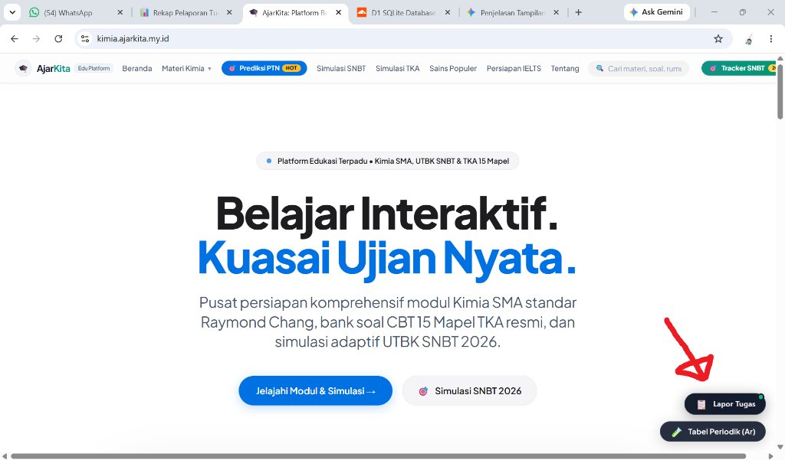
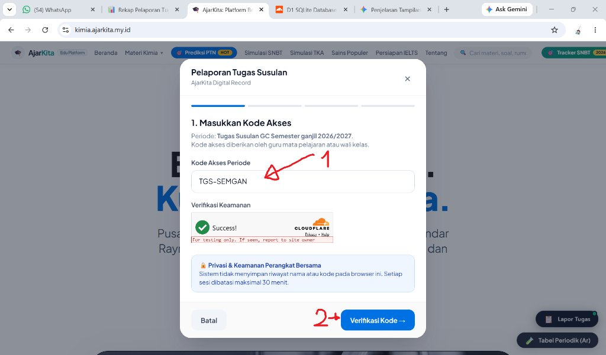
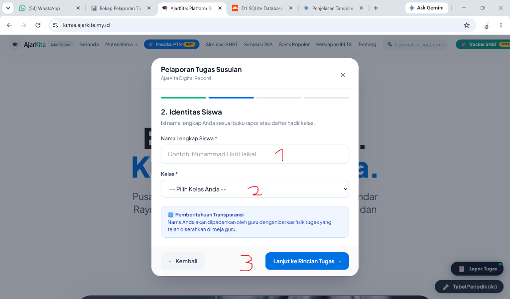
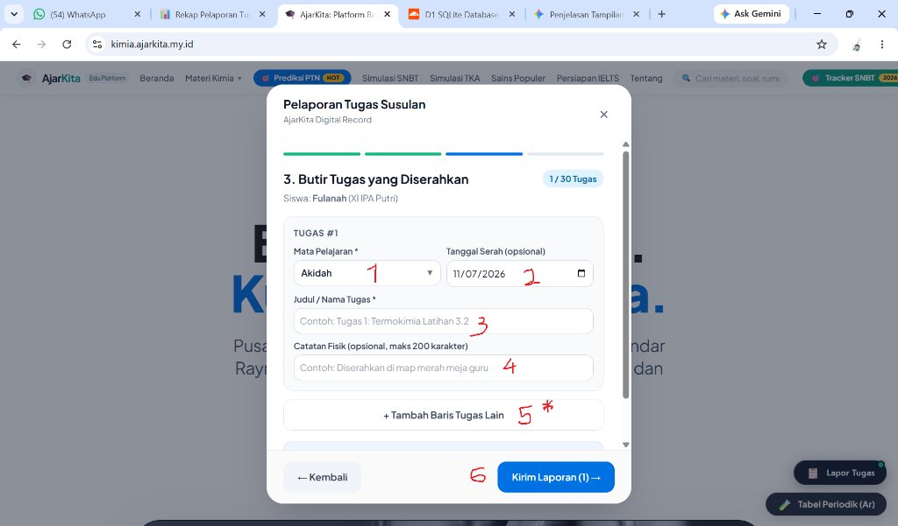
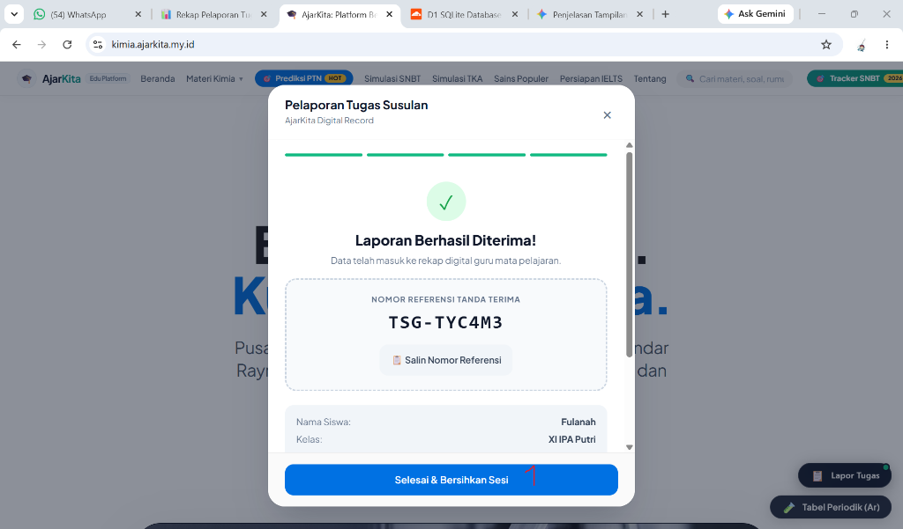

Ketika tenggat penugasan di Google Classroom (GC) telah resmi ditutup, siswa yang mengumpulkan tugas secara susulan / fisik seringkali mengalami kendala pencatatan nilai yang terselip atau lambat terdata oleh guru mata pelajaran.
Sistem Pelaporan Tugas Susulan AjarKita hadir sebagai jembatan digital resmi yang bertujuan untuk:

Instruksi:

Petunjuk Pengisian Kolom:
| No | Elemen | Keterangan & Tindakan |
|---|---|---|
| 1 | Kode Akses Periode | Ketik kode akses yang diberikan oleh guru (Contoh: TGS-SEMGAN atau cukup SEMGAN). Huruf besar/kecil tidak berpengaruh. |
| - | Verifikasi Keamanan | Centang kotak Cloudflare Turnstile sampai muncul tanda centang hijau Success!. |
| 2 | Tombol Lanjut | Klik tombol biru "Verifikasi Kode →" untuk masuk ke tahap identitas. |

Petunjuk Pengisian Kolom:
| No | Elemen | Keterangan & Tindakan |
|---|---|---|
| 1 | Nama Lengkap Siswa | Ketik nama lengkap Anda sesuai buku rapor atau daftar hadir kelas resmi (Contoh: Muhammad Fikri Haikal). Hindari nama panggilan atau singkatan tidak baku. |
| 2 | Kelas | Klik menu dropdown dan pilih kelas Anda (Contoh: XI IPA Putra atau XI IPA Putri). |
| 3 | Tombol Lanjut | Klik tombol biru "Lanjut ke Rincian Tugas →". |

Petunjuk Pengisian Kolom:
| No | Elemen | Keterangan & Tindakan |
|---|---|---|
| 1 | Mata Pelajaran | Pilih mata pelajaran yang tugasnya dilaporkan (tersedia 27 mapel resmi kurikulum sekolah). |
| 2 | Tanggal Serah | Pilih tanggal saat berkas fisik diserahkan (opsional, bawaan adalah tanggal hari ini). |
| 3 | Judul / Nama Tugas | Ketik nama tugas dengan lengkap (Contoh: Tugas 1: Termokimia Latihan 3.2). Jika tugas sudah pernah dilaporkan siswa lain, saran judul otomatis akan muncul. |
| 4 | Catatan Fisik | Keterangan lokasi fisik tugas (opsional, maks 200 karakter, misal: Diserahkan di map merah meja guru). |
| 5* | + Tambah Baris | Opsional: Klik tombol ini jika Anda ingin melaporkan lebih dari 1 tugas sekaligus (dapat diisi hingga 30 tugas). |
| 6 | Kirim Laporan | Klik tombol biru "Kirim Laporan (X) →" untuk menyimpan data ke server. |

| Nomor Referensi | Contoh: TSG-TYC4M3. Klik tombol "Salin Nomor Referensi" atau tangkap layar (screenshot) sebagai bukti sah Anda. |
| 1 Selesai & Bersihkan | Klik tombol biru "Selesai & Bersihkan Sesi" untuk menutup dialog dan mengosongkan memori browser demi keamanan bersama. |
Q: Bagaimana jika saya salah mengetik judul tugas atau lupa memasukkan satu tugas?
A: Anda cukup mengisi formulir pelaporan kembali dari awal. Sistem secara otomatis memperlakukan laporan terakhir Anda sebagai revisi data terbaru.
Q: Kapan status tugas saya berubah menjadi "Dikonfirmasi"?
A: Guru mata pelajaran akan memverifikasi berkas fisik Anda melalui Dashboard Guru. Begitu guru memeriksa tumpukan tugas, status di sistem akan diperbarui menjadi terkonfirmasi.